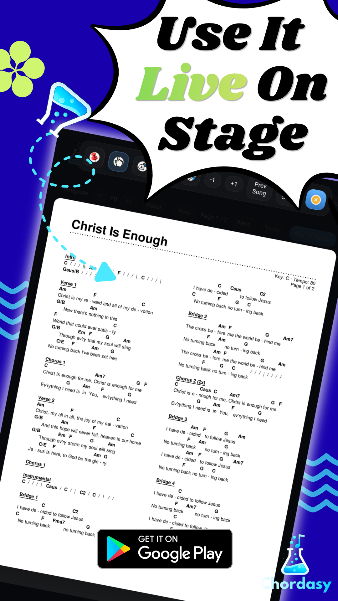
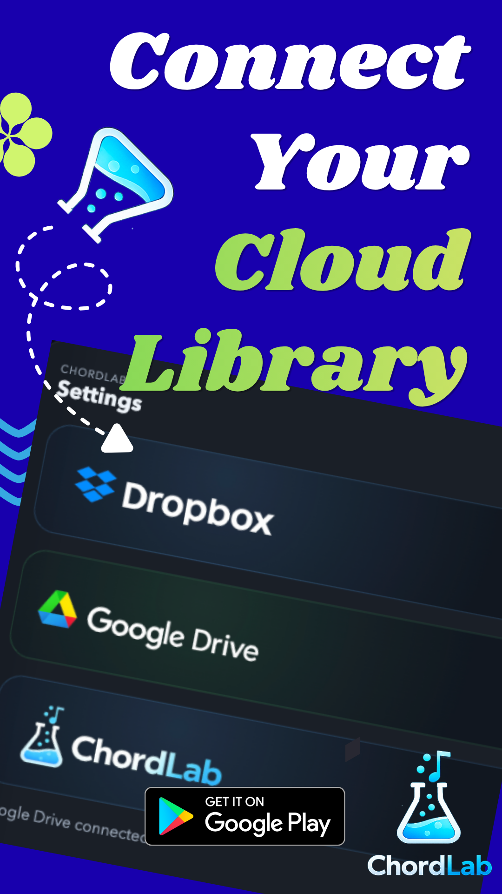
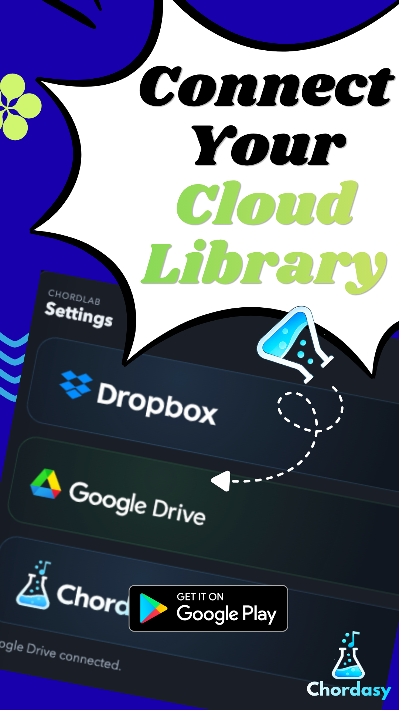
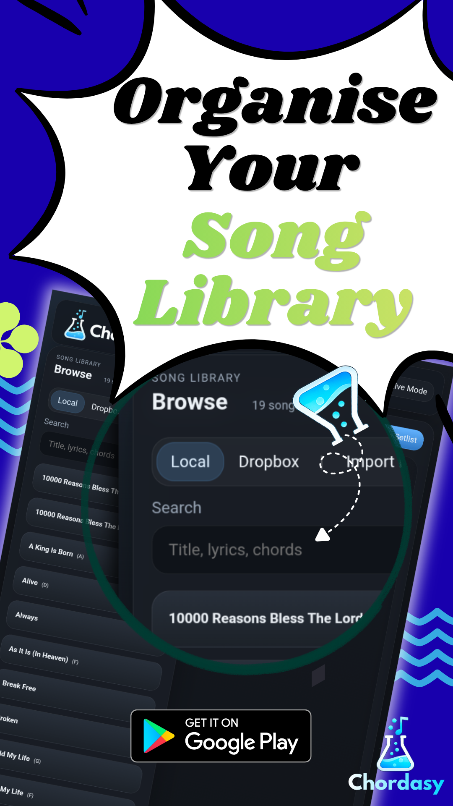
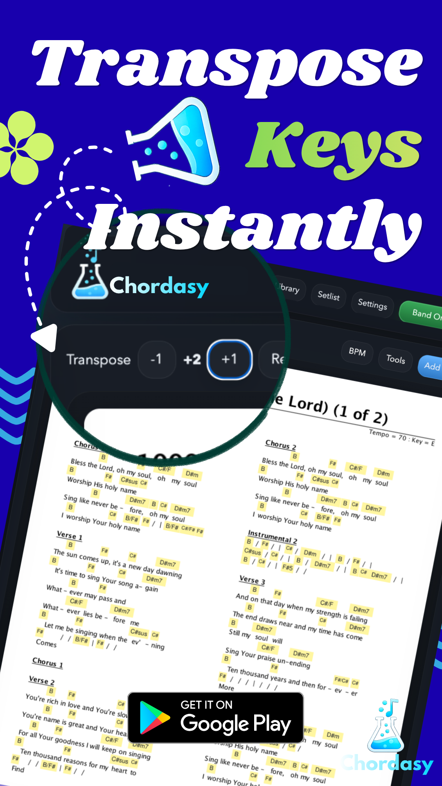
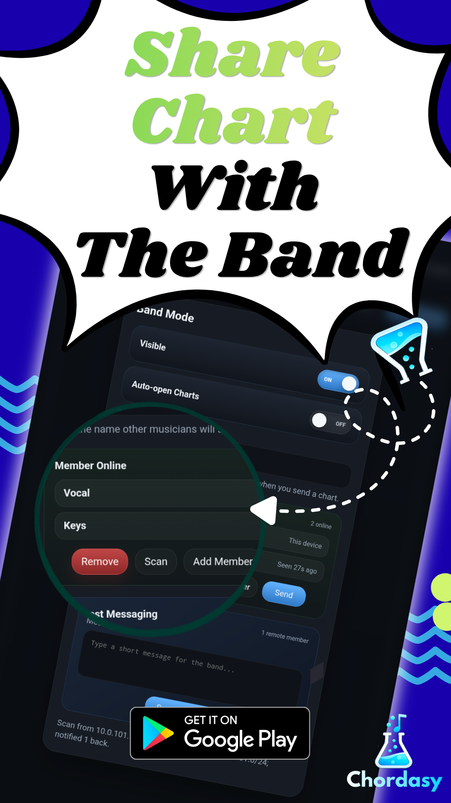

Library
Organise your song library
Search local charts, browse cloud sources, import PDFs, and open the right song quickly from a tablet-friendly library layout.
Tablet-ready workflow for rehearsals, worship teams, and live bands
ChordLab brings library search, setlists, transpose, live annotation, cloud sync, and Band Mode sharing into one fast tablet workspace.





Feature storyboards
These are the same visual directions used in your latest store material, now turned into the structure of the website so visitors understand ChordLab in seconds.
Library
Search local charts, browse cloud sources, import PDFs, and open the right song quickly from a tablet-friendly library layout.
Setlist
Create the running order, drag songs into place, and keep the whole set ready for rehearsal, worship, or live performance.

Transpose
Shift the key on the fly without leaving the chart, so the band can react immediately when the room or vocalist needs a change.

Live mode
Keep the chart full-size, switch tools quickly, and stay inside the performance flow while rehearsing or playing live.

Cloud
Link Dropbox or Google Drive from inside the app, choose your chart folder, and refresh the library without leaving your workflow.
Band Mode
Send charts, messages, and files to connected members on the same network, even when they do not already have the song in their library.
Quick start
FAQ
Do all tablets need the same Dropbox or Google account?
No. If the receiving tablet does not already have the chart, ChordLab can receive the sent file and store it locally.
Does Band Mode use the internet?
Band Mode is designed for devices on the same local network. It does not require a ChordLab cloud server.
Can I use image charts too?
Yes. ChordLab supports PDF, JPG, JPEG, and PNG for viewing, annotation, setlists, and sending to members. Transpose is only for chord-based charts.
Download and support
Download the Android tablet version, try it in rehearsal, and support the project if it becomes part of your weekly workflow.